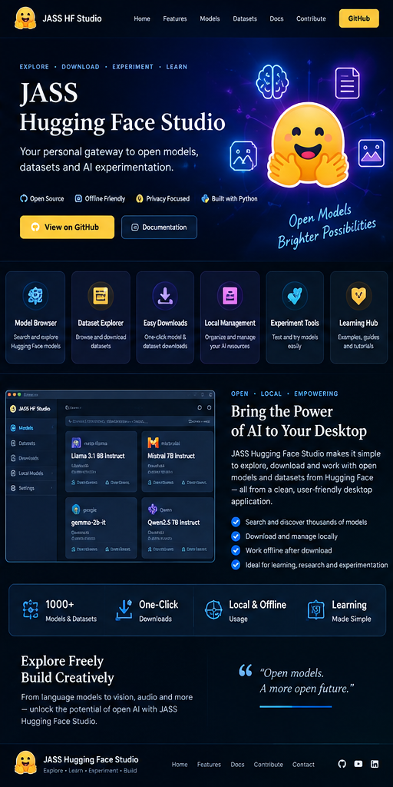

001
Model Browser
Search and explore open model resources.

Explore. Download. Experiment. Learn.
A practical desktop workspace for discovering, inspecting and working with open models and datasets from the Hugging Face ecosystem.
Open source, practical and built as part of the JASS software laboratory.
Focused capabilities, clear workflows and a maintainable foundation.
Search and explore open model resources.
Inspect datasets before using them in projects.
Download, organize and experiment locally.
A practical technology foundation selected for local, maintainable and extensible software.